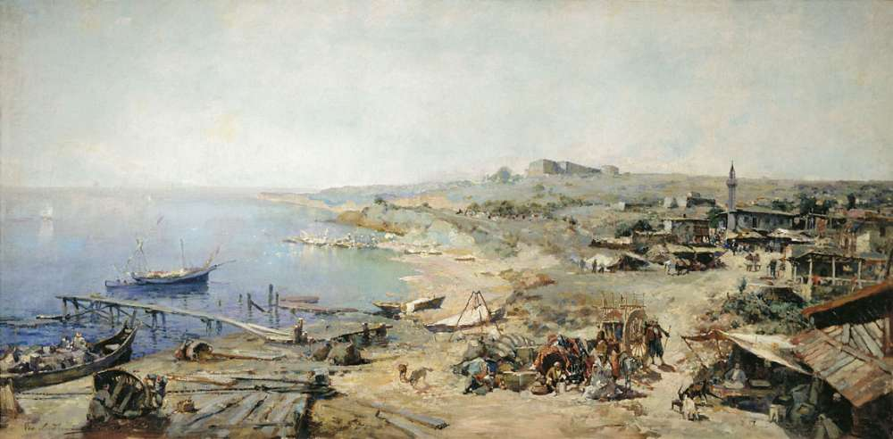
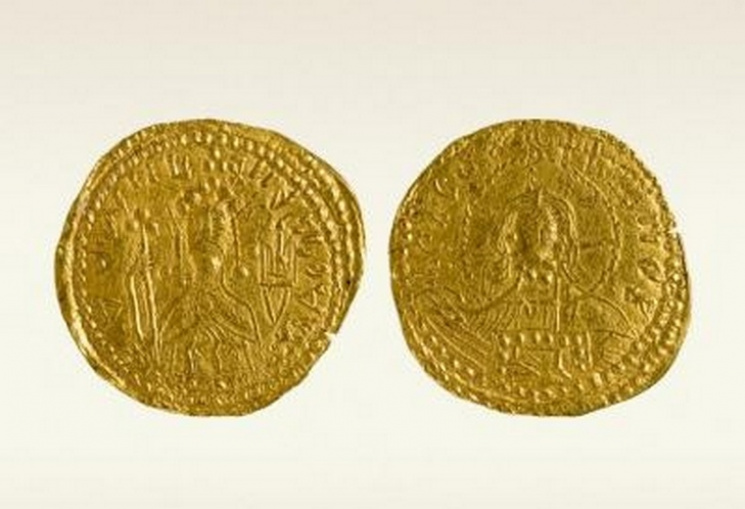

Одесса

Добро пожаловать в Одессу – город солнца, моря и юмора!
Пожалуй, каждый человек в мире знает про Одессу. Этот город славится своей необычной архитектурой, историей, многонациональностью и атмосферой свободы.
Интересные факты
- Город был основан в 1794 году по рескрипту Екатерины II. Ранее назывался Хаджибей (турецкая крепость). 
- Брусчатка - историческое наследие. Одесская брусчатка является настоящим историческим наследием. Все камни были доставлены из Неаполя, из-под Везувия. На сегодняшний день они до сих пор лежат на улице Пушкинской и Дерибасовской.
- На улице Итальянский бульвар и в Высоком переулке действует левостороннее движение.
- В Одесском археологическом музее хранится первая золотая монета Киевской Руси от князя Владимира. 
- В 1891 году в Одессе появился первый в Российской Империи автомобиль. На пассажирском кресле сидел Василий Навроцкий, редактор ‘Одесского листка’, за рулем – его водитель.
- Самый длинный дом вдлину почти полкилометра! В ‘клюшке’ проживают около 3 000 человек.
- И как же не вспомнить про торговлю одесситов на рынках! Особенные умельцы могут наторговать так, что продавец останется в минусе:) Всем известный рынок Привоз, где сохраняется такая ‘традиция’ уже сотни лет.